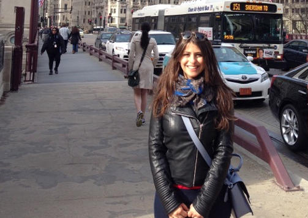

Fatma KaraogluResearch student School of Mathematical Science Pevensey 3, 5C26 Brighton BN1 9QH United Kingdom Telephone: +44 1273 872909 e-mail: fk74@sussex.ac.uk |

|
Research Interest
Finite Geometry
Research Experience
2014 to -- University of Sussex, Brighton, United Kingdom
Research in Progress
Cubic Surfaces with Twenty-Seven Lines Over Small Finite Fields
Autumn 2017 Workshop on Algebra, Year 2, Department of Mathematics University of Sussex, Brighton, UK
Spring 2016 Workshop on Numerical Analysis II, Year 2, Department of Mathematics University of Sussex, Brighton, UK
Spring 2016 Workshop on Numerical Analysis I, Year 1, Department of Mathematics University of Sussex, Brighton, UK
Autumn 2015 Workshop on Algebra, Year 2, Department of Mathematics University of Sussex, Brighton, UK
Spring 2012 Foundation Mathematics, Year 1, Institute of Technology Balikesir University, Balikesir, TR
Autumn 2012 Foundation Mathematics, Year 1, Institute of Technology Balikesir University, Balikesir, TR
Spring 2011 Foundation Mathematics, Year 1, Institute of Technology Balikesir University, Balikesir, TR
Autumn 2011 Foundation Mathematics, Year 1, Institute of Technology Balikesir University, Balikesir, TR
Second CoDiMa Training School in Computational Discrete Mathematics, 17-21 October 2016, Edinburgh, United Kingdom.
Combinatorics 2016, 29 May- 4 June 2016, Maratea, Italy.
3rd Istanbul Design Theory, Graph Theory and Combinatorics Workshop, 13-17 June 2016, Istanbul, Turkey.
First CoDiMa Training School in Computational Discrete Mathematics,16-20 November 2015, Manchester, United Kingdom.
Breaking Boundaries between Analysis, Geometry and Topology II, 28 September 2015, University of Sussex, U.K.
Giornate di Geometria 2015, 17-19 September 2015, Caserta, Italy.
Breaking Boundaries between Analysis, Geometry and Topology I, 15-16 April 2015, University of Sussex, U.K.
Izmir Algebraic Geometric Topology Days II, 9-14 January 2011, Izmir, Turkey.
Commutative Algebra and its Applications to Combinatorics and Algebraic Geometry, 12-25 September 2010, Istanbul, Turkey.
48th Southeastern International Conference on Combinatorics, Graph Theory & Computing, 6-10 March 2017, Florida Atlantic University, United State.
The 13th International Conference on Finite Fields and Their Applications, 4 - 10 June 2017, Gaeta, Italy.
Summer School on Finite Geometry, 26 - 30 June 2017, Brighton, United Kingdom.
26th British Combinatorical Conference, 3-7 July 2017, Glasgow, United Kingdom.
Summer School on Finite Geometry, 26 - 30 June 2017, Brighton, United Kingdom.